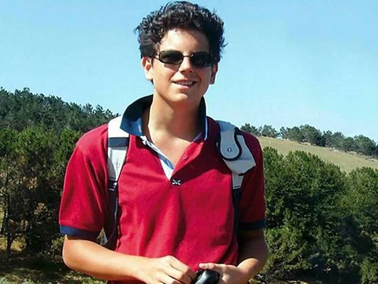
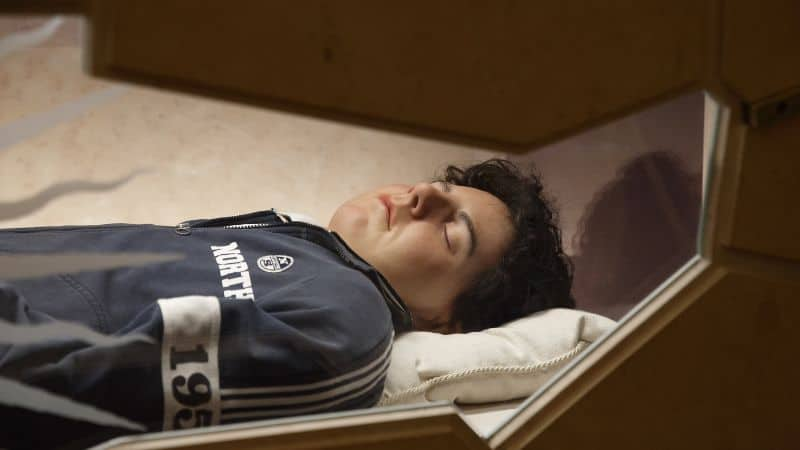

A Life Rooted in Faith
Carlo Acutis was born on May 3, 1991, in London, England. He was the son of Italian parents, and his family later moved to Italy, where he grew up in the city of Milan and then Assisi.

From an early age, Carlo was known for his joyful personality, his seriousness in prayer, and his ability to gather friends around him. He loved ordinary life, school, sport, technology, and the Christian faith. Yet the center of his life was always the Eucharist.
"The Eucharist is my highway to heaven."
Faith, Friendship, and the Eucharist
Carlo loved attending Mass and spending time with Jesus in the Eucharist. He often spoke about the real presence of Christ in the Eucharist and encouraged others to know the life of prayer and communion in the Church.
He saw the Catholic faith as something lived with joy. He was generous, kind, and deeply respectful of the dignity of every person. His friendship with others was genuine, and he remained close to his family, friends, and community.
Technology and Mission
Carlo was also a young person who understood technology. He used his skills to create a website presenting 187 Eucharistic miracles from saints and Catholic teaching resources. His project helped people discover the faith through a modern language that many young people understood.

Carlo believed that digital tools could be used for a mission of truth, beauty, and holiness. His work showed that technology could become a path toward prayer, education, and truth.
A Short but Powerful Life

Carlo’s illness developed quickly. He suffered from acute leukemia and died on October 12, 2006, at the age of fifteen. Even in sickness, he showed courage, peace, and trust in God. His life was short, but it left a strong witness for young people across the world.
Today, Carlo Acutis is remembered as a young man whose life was centered on Jesus, the Eucharist, and the mission of the Church.